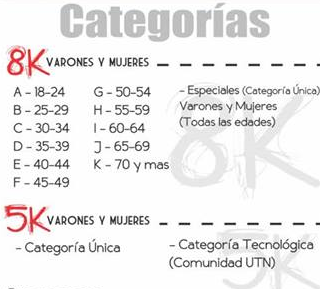
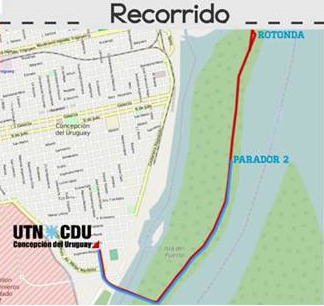

Maratón Tecnológica 2016
Desde la Secretaría de Asuntos Estudiantiles de la UTN FRCU, se gestionó la organización de la próxima maratón tecnológica, la cual se llevará a cabo el día 27 de Agosto.
Logo: Maratón Tecnológica 2016La maratón tecnológica, la cual se corresponde a la 5° fecha del “Circuito de maratones 2016” se llevará a cabo el día 27 de Agosto. El recorrido de la misma toma como lugar principal la Isla del Puerto de la ciudad de Concepción del Uruguay, comenzando y finalizando – en determinados casos – en la rotonda del puente.
Los participantes serán clasificados en categorías -5K y 8K – y subcategorías de acuerdo a su edad.
 Categorías de la MaratónInscripción
Para aquellas personas interesadas en participar, la inscripción se puede llevar a cabo personalmente, en la oficina Nro. 24 de la UTN-FRCU, o a través de la página web. También es posible inscribirse el mismo día de la prueba, entre las 13 y las 14:30 horas.
En cuanto a los costos, la inscripción general tiene un monto de $200 para la categoría 8K y $150 para la categoría de 5K, a su vez la comunidad universitaria tiene un costo general de inscripción de $150.
 Recorrido - Isla del puerto